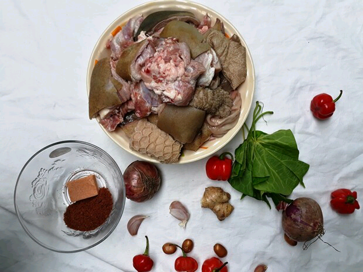

Nigerian Peppersoup
Peppersoup is one of the most delicious Nigerian foods.
We have different recipes in Nigeria that are made with different kinds of meat and fishes.
The most popular is goat meat recipe followed by the assorted cow/goat meat recipe
(which includes shaki, kpomo, fresh meat, intestine, liver and kidney) also we have
catfish Pepper soup which is fondly called 'point and kill'
All Nigerian Foods
Recipe Information
Preparation time : 30 min
Cook time: 15 min
Servings: 8 plates
Difficulty: Intermediate

Complete list of Pepper soup Ingredients and spices
- 1 kg of assorted meat(goat or cow)
- 3 seeds of Ehu
- Scent leaves(a handful)
- Sliced Utazi Leaves (optional)(a handful)
- 2 stock cubes
- 3 Tablespoons of ground crayfish(optional)
- 1 cup of sliced onions
- Salt and pepper to taste
- 1 teaspoon Beef seasoning spice
- 2 garlic cloves
- Half-finger of garlic
- Half teaspoon lion Peppersoup spice
- Paprika - teaspoon
are many brands of beef seasoning spices in Nigeria, you can use anyone.
Steps in preparing the Recipe
- Clean the ginger and garlic, pound or blended together.
The seed of ehu is one of the most relevant ingredients
just go ahead and break away the outer shell,
then go ahead and blend/pound together with the uziza seeds and half cup of crayfish
- Slice the onions and utazi leaves and set aside in a plate.
- Start cooking the meat with some simple ingredients. (A seasoning cube, a teaspoon of Salt
and half cup of sliced onions).
- Cook the meat for just 10 minutes then add about 3 cups of water and cook for 30-50 minutes
until the meat becomes tender and easy to chew. You can add another cup of water
- Add the pepper soup spice, the ground ehu, uziza, crayfish, and remaining onions.
- Add the paprika - a teaspoon. Paprika is a spice made from the dried fruit of red bell pepper.
It makes my pepper soup somewhat reddish.
- Add the sliced utazi, salt and (ordinary) pepper to taste. Allow to boil for another 5-10 minutes
and you just made a delicious pot of Peppersoup, one of Nigeria's most popular evening meals.
Note: seeds are very peppery, be sure to taste before adding scotch bonnet (ordinary pepper).
You can serve the pepper soup with a chilled bottle of your favourite drink. Although, I enjoy it better
with boiled white rice or yam.
So this is how to prepare pepper soup with intestine, tripe, liver and plain red beef - assorted meat.